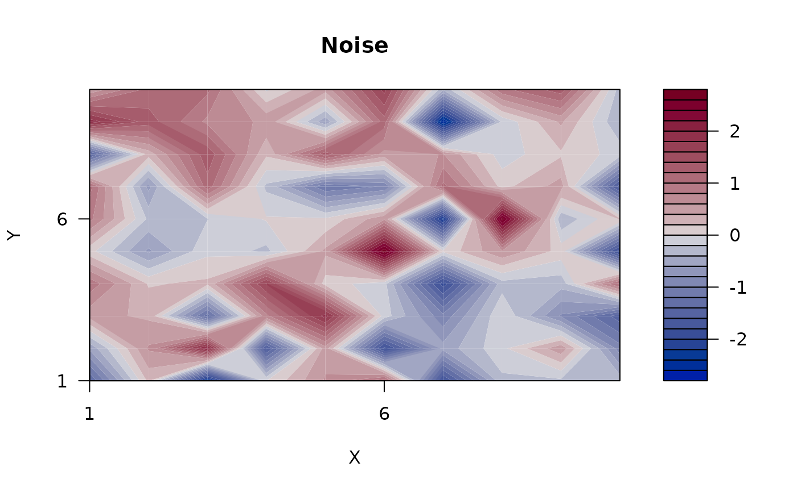
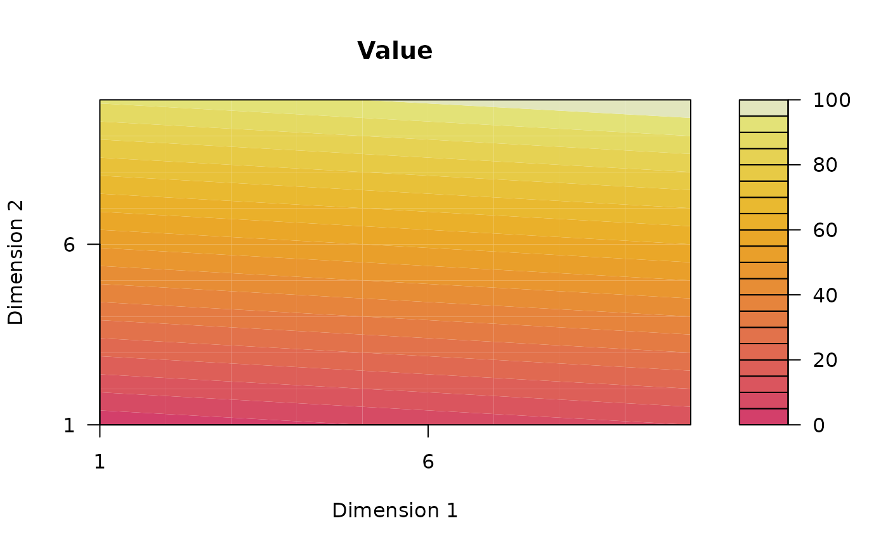
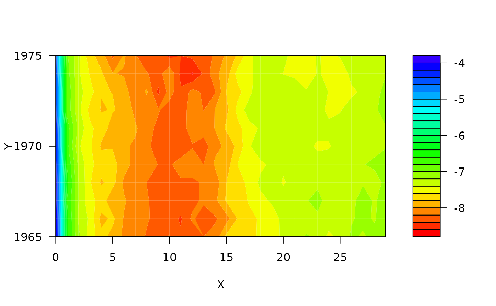
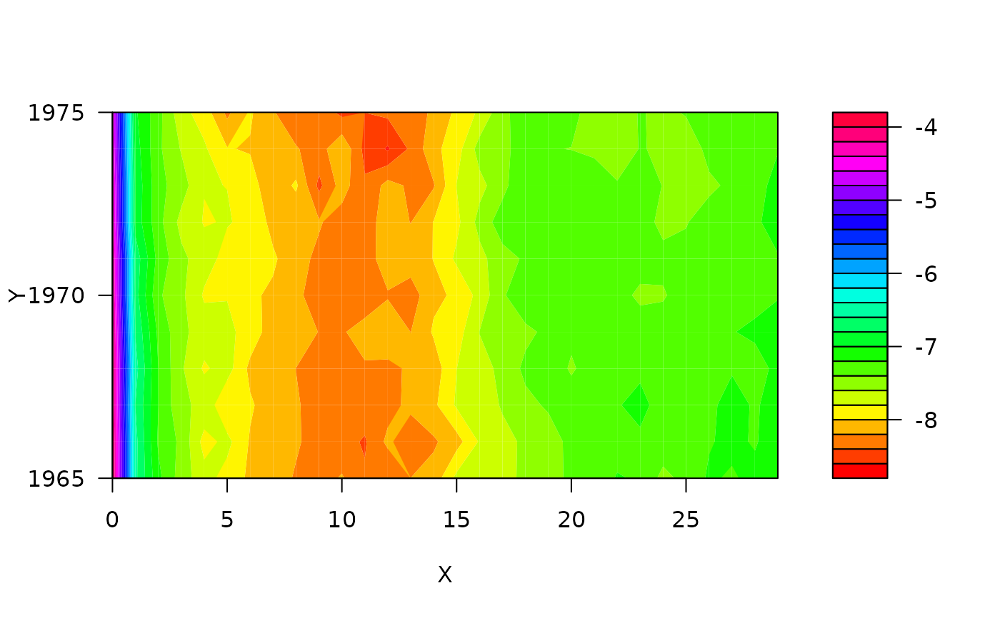

Displays a matrix or an estimated demographic model of class smAPC as a heatmap.
Usage
# S3 method for class 'matrix'
plot(
x,
labs = c("X", "Y"),
color.palette = c("default", "special"),
main = "",
...
)
# S3 method for class 'smAPC'
plot(
x,
component = c("all", "surface", "period", "cohort", "residuals", "original"),
labs = c("Age", "Time"),
color.palette = c("default", "special"),
main = "",
...
)Arguments
- x
Either a matrix or the result of fitting a smoothed demographic model (object of class
smAPC).- labs
Vector of labels for X and Y axes.
- color.palette
Character string
"default"or"special"or a function accepting one argument and returning a color palette (for examplerainbow).- main
Title for the plot.
- ...
Other parameters. They are currently ignored.
- component
Character string specifying which component to plot.
Examples
plot(matrix(rnorm(100), 10, 10), main = "Noise")

plot(matrix(1:100, 10, 10), c("Dimension 1", "Dimension 2"), main = "Value")

m <- log(demography::fr.mort$rate$female[1:30, 150:160])
plot(m)
plot(m, color.palette = "special")

plot(m, color.palette = rainbow)

if (FALSE) { # \dontrun{
m <- log(demography::fr.mort$rate$female[1:30, 150:160])
sm <- autoSmoothAPC(m)
plot(sm)
plot(sm, "surface")
plot(sm, "cohort")
plot(sm, "period")
plot(sm, "residuals")
plot(sm, "original", main = "Original data")
} # }